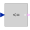

LessEqualThresholdOutput y is true, if input u is less or equal than threshold |

|
Information
This information is part of the Modelica Standard Library maintained by the Modelica Association.
The output is true if the Real input is less than or equal to parameter threshold, otherwise the output is false.
Parameters (1)
| threshold |
Value: 0 Type: Real Description: Comparison with respect to threshold |
|---|
Connectors (2)
| u |
Type: RealInput Description: Connector of Real input signal |
|
|---|---|---|
| y |
Type: BooleanOutput Description: Connector of Boolean output signal |
Used in Components (1)
|
Modelica.Electrical.Analog.Examples.Utilities
Switched capacitor which can represent a positive or negative resistance |